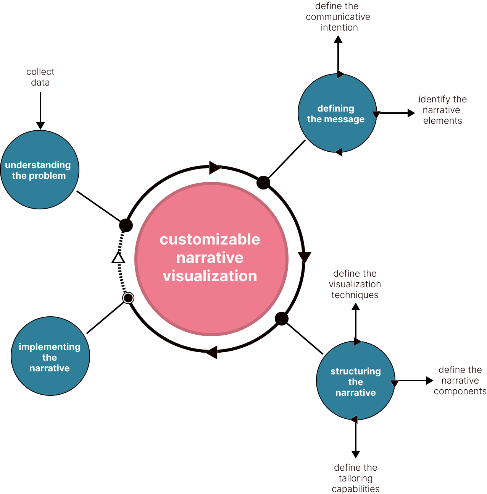

The model comprises four phases. Each phase has activities that aim to involve one or more actions towards the development of a narrative.
In this step the designer of the narrative defines what is his/her communicative message through the narrative, i.e., what the story is about. In this stage the designer may go forward and backward to the next step, once the definition of the communicative intention may be affected by the narrative elements defined in the next step. It is important to define an intention as well as unveil what can be done with the data collected. The intention must rely on the designer's intention, but the elements of the story and the feature of customization must rely on the elements defined and the variation that their visualization might take.
In this step the designer of the narrative defines what is his/her communicative message through the narrative, i.e., what the story is about. In this stage the designer may go forward and backward to the next step, once the definition of the communicative intention may be affected by the narrative elements defined in the next step. It is important to define an intention as well as unveil what can be done with the data collected. The intention must rely on the designer's intention, but the elements of the story and the feature of customization must rely on the elements defined and the variation that their visualization might take.
In this step the designer identifies the narrative elements from the data sets collected. To guide the designer, we follow the framework proposed by Cruz and Machado (2011). Thus, the actor(s), event(s), time, and location of the narrative must be identified. The actor is the entity from whom the narrative is about. The events are pieces of information that can be displayed in the form of graphic visualization and support the communicative intention. The time and location refers to where and when the communicative intention takes place.
In this step the designer defines how the narrative elements previously defined will be shown to readers. To provide readers with alternative points of view or ways to explore the story, the designers must define more than one technique for a single narrative element, i.e, the reader will be able to tailor the narrative considering the variety of techniques defined by the designer. Another point of attention is that the sets of visualization techniques must be associated with a narrative element that, in turn, is associated with a data set. The output of this step is a group of narrative elements and their visualizations.
In this step the designer has to choose what narrative components will be used in the story. This step considers the design space defined by Segel and Heer (2010). The design space presented by them comprises three dimensions: genre, visual narrative tactics, and narrative structure tactics. Once we are addressing narratives in which end-users may engage in tailoring the narrative, we enclose the genres options to those that can contain interactive interface resources, i.e., partitioned poster, slideshow, and annotated chart. To handle these genres, we adopted a structure defined by Borges (2022) in which each genre can contain one or more components to organize its content. The remaining dimensions are used as defined by Segel and Heer (2010). It is important to note that whereas visual narrative tactics can be related to individual elements, narrative structure tactics can be related to one or to a category of elements. This characteristic allows that two or more components may change at once when a filter is modified, for example.
In this step the designer defines what tailoring design patterns will be provided by users in order to let them tailor the narrative. To support the designer, we considered the design patterns for tailorable applications showed by Baranauskas and Neris (2007)